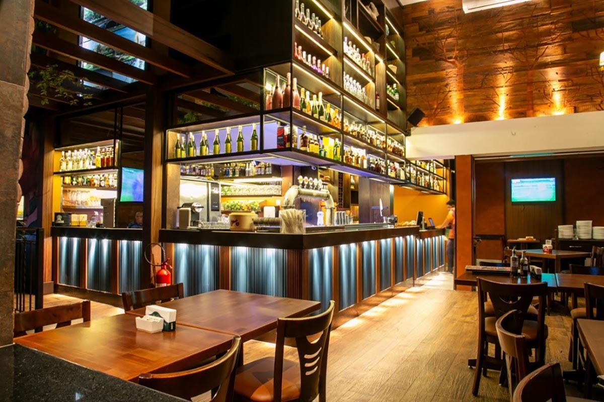
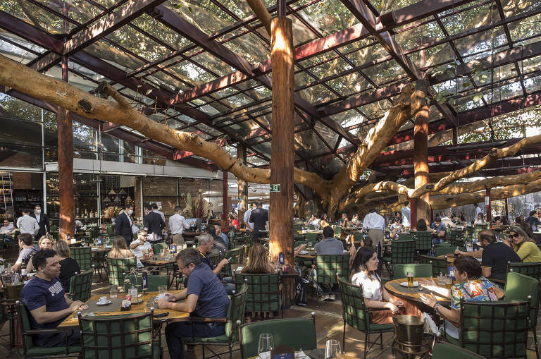

Os bares da Vila Madalena
Depois de um dia de trabalho, nada melhor do que um bom chopp, um petisco e uma conversa em uma mesa de bar. Opções de sobra na região das ruas Aspicuelta, Fradique Coutinho e Wisard.
Veja quais os melhores bares e restaurantes da região no Guia da VEJA São Paulo.
Mercadão de São Paulo

Conhecido oficialmente como Mercado Municipal Paulistano, o Mercadão é um ponto tradicional para quem aprecia boa comida. Famoso pelos pastéis e pelo sanduíche de mortadela, o espaço também impressiona pela arquitetura e pelos vitrais coloridos.
Saiba mais sobre esse ícone gastronômico no site oficial do Mercadão.
Faria Lima

A Avenida Faria Lima é conhecida por sua diversidade gastronômica. Desde cafés sofisticados até restaurantes estrelados, a região oferece uma variedade que agrada todos os gostos. Perfeita para quem quer explorar diferentes sabores e ambientes.
Confira os melhores lugares da Faria Lima no Guia da Semana.
Pinheiros

Pinheiros é um bairro que mistura tradição e inovação. Se você quer uma experiência gastronômica diversificada, com opções que vão da comida brasileira à cozinha internacional, Pinheiros é o lugar ideal. A região conta com muitos restaurantes de chefs renomados.
Veja a lista de restaurantes em Pinheiros no Timeout São Paulo.
Jardins
O bairro dos Jardins é conhecido por seus restaurantes sofisticados e com cardápios requintados. Se você procura alta gastronomia, este é o lugar. São diversas opções, de cozinha francesa a contemporânea, em locais que combinam o luxo com o charme de São Paulo.
Descubra mais sobre os Jardins no site de turismo de São Paulo.
Rua Augusta

A Rua Augusta é um dos pontos mais boêmios da cidade. Ao longo da rua, você encontra diversos bares e restaurantes com estilos e cardápios variados. É o lugar ideal para quem busca um ambiente descontraído e opções de comida para todos os gostos.
Explore mais opções gastronômicas da Rua Augusta no Guia da Semana.
Liberdade

A Liberdade é o centro da cultura japonesa em São Paulo e também um excelente lugar para quem busca boa comida oriental. Com diversos restaurantes especializados em sushi, ramen e yakisoba, é o destino certo para os amantes da gastronomia nipônica.
Saiba mais sobre a região da Liberdade no Visite São Paulo.
Vila Progredior

Se você procura um lugar com uma culinária criativa e ao mesmo tempo descontraída, a Vila Progredior é o lugar. Um bairro cheio de restaurantes alternativos e pequenos cafés que misturam arte, cultura e gastronomia de forma única.
Descubra mais sobre a Vila Progredior no site oficial.
Nenhum resultado encontrado